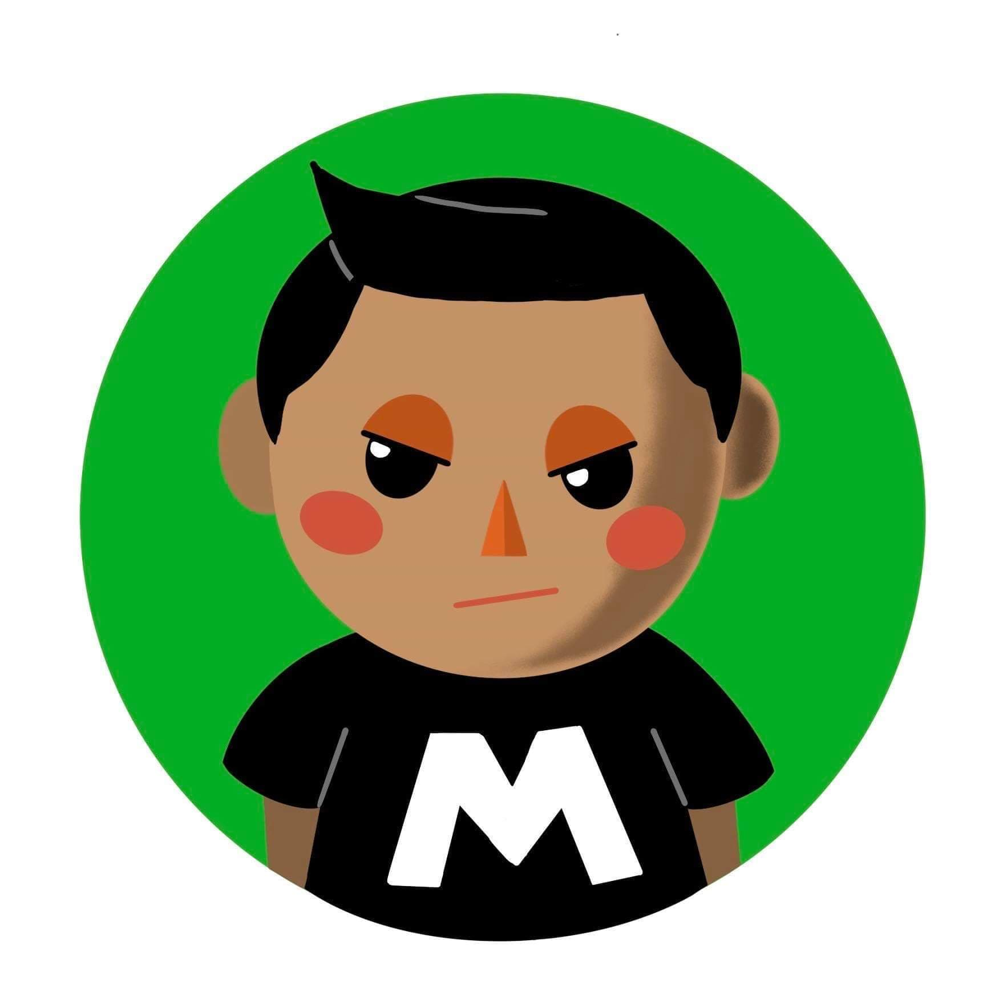
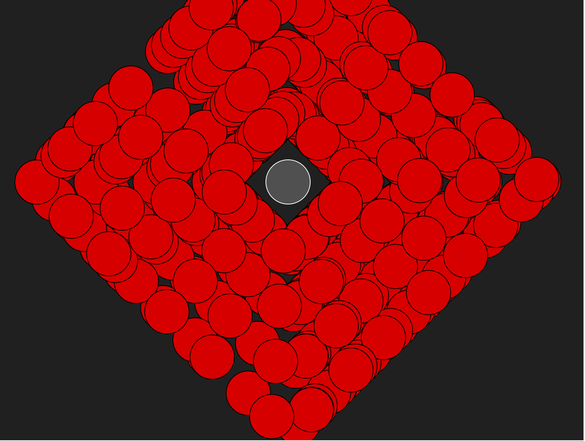
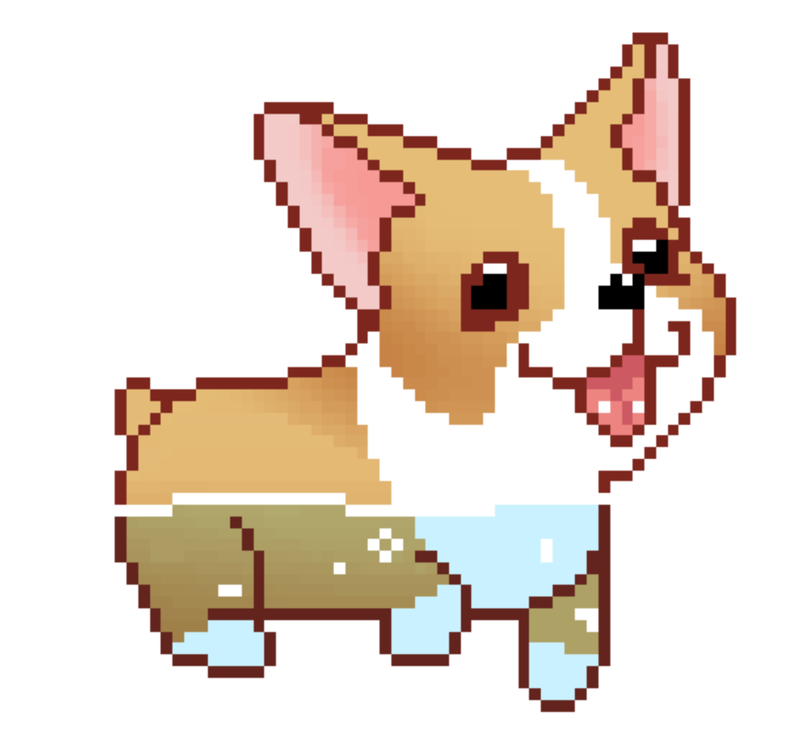
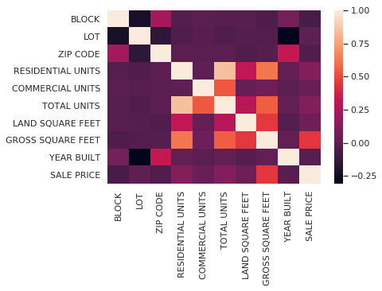
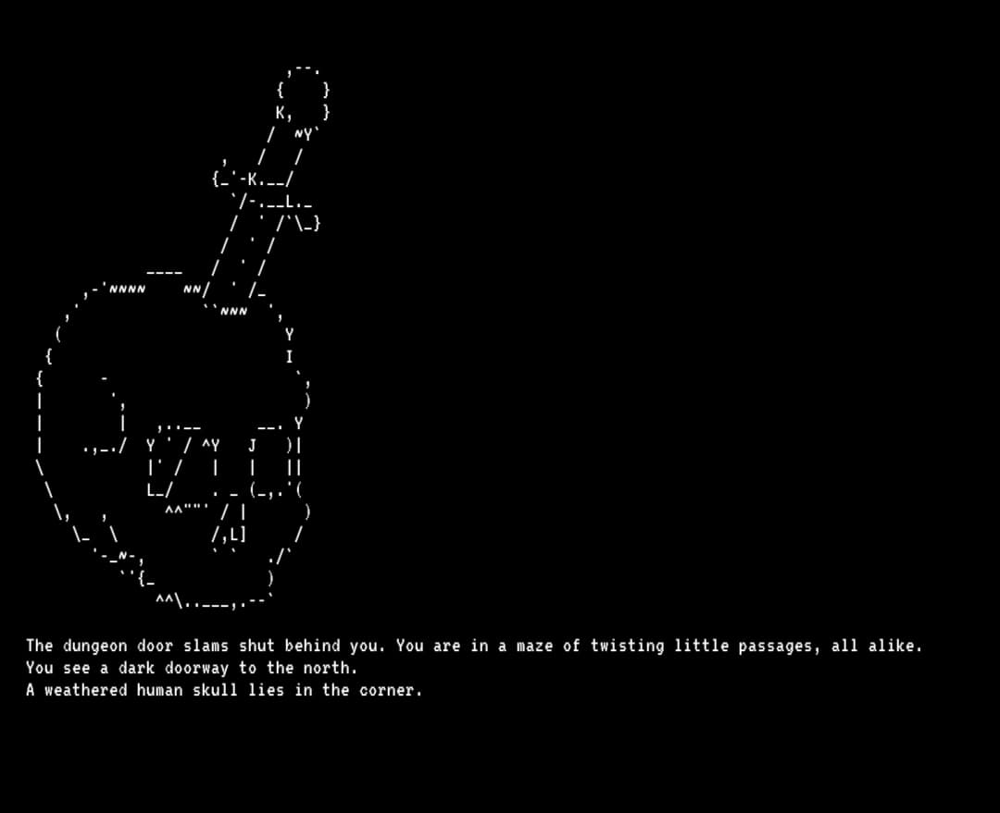

Who am i?

Don't let the intimidating avatar fool you! My names Hamzah and I am a soon to be computer science graduate who is passionate about programming and art. I have some experience in the following languages: C#, CPP, Java, Haskell, Python, SQL. I also have experience using UML and are familiar with software development methodologies, particularly the agile and incremental approach. I am familiar with AR technologies and some machine learning libraries.

During my university module 'Functional Programming' I leveraged an existing animation library created by my lecturer to develop an animation using Haskell and the GHCi window. The idea was to use geometric shapes to form a cog-like effect around a point using higher-order functions and list comprehensions. Click on the button below to view the full animation.

My first ever game, created using Java, the Netbeans IDE and a engine based on the classic Box2D. This game was a 2D-platformer which featured effects like dynamic sounds/music, multiple levels, pause implementation and a menu system. The game follows a shy corgi who has to overcome his fear of bigger dogs and bath-tubs to achieve his favourite treats!

An Artificial Intelligence team project created with two other students, aimed at using regression based AI to map housing prices in New York City from 2018 to 2019 to establish why so many properties in NYC were uninhabited. Regression models used included: Multiple Linear Regression, Random Forest Regression, Support Vector Machines and Decision Tree Regression

Sundown is a text-based horror adventure game created in Unity using C#. The game features an inventory system, various text commands and a generally eerie atmosphere! I created this game outside of university to gain a better understanding of the Unity engine, which proved to be useful for my university dissertation.